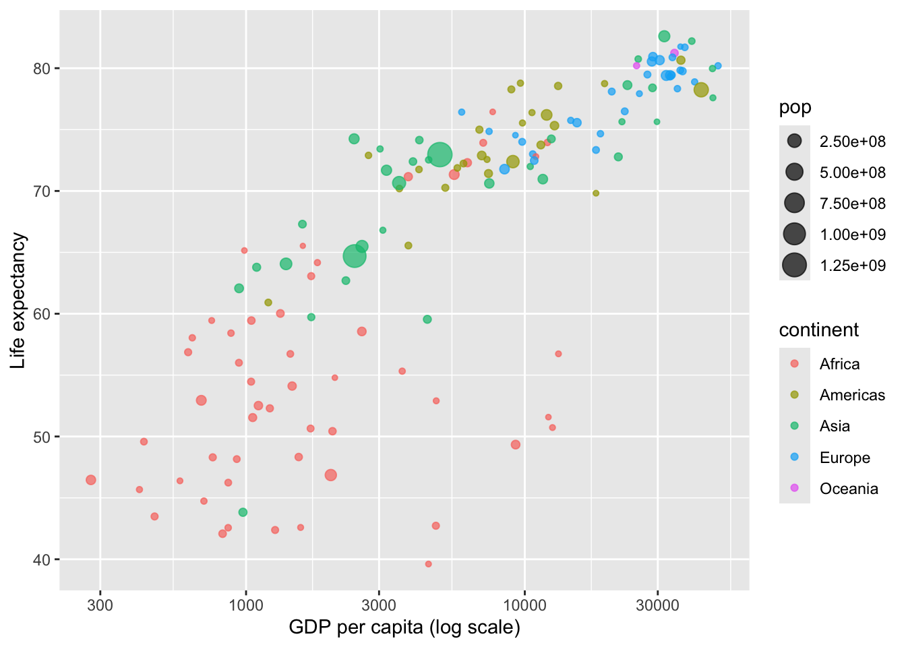
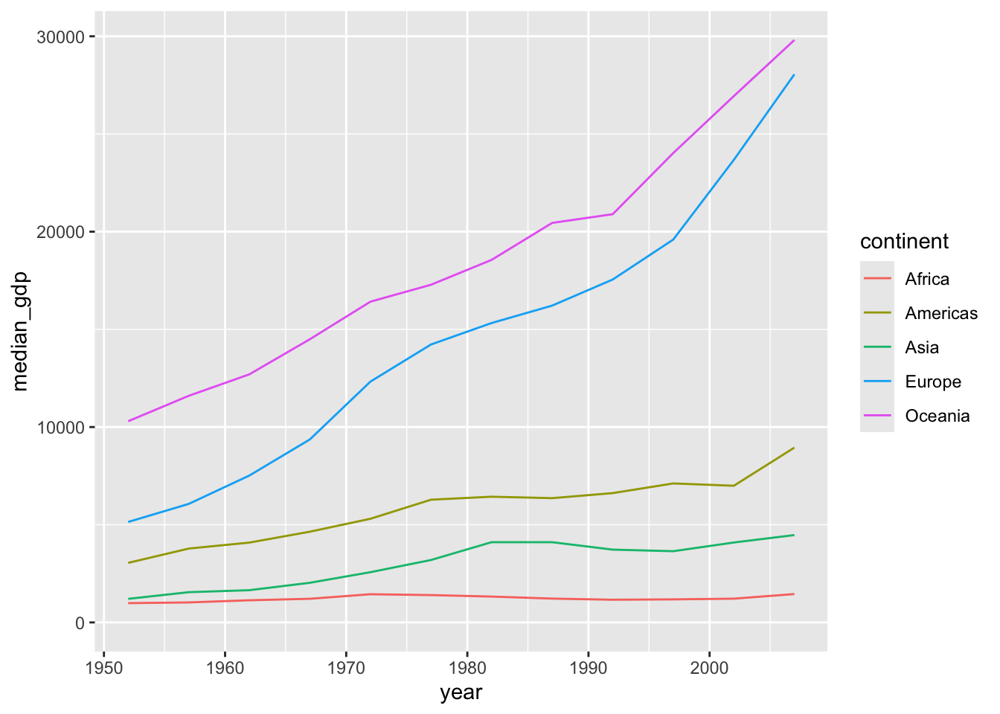
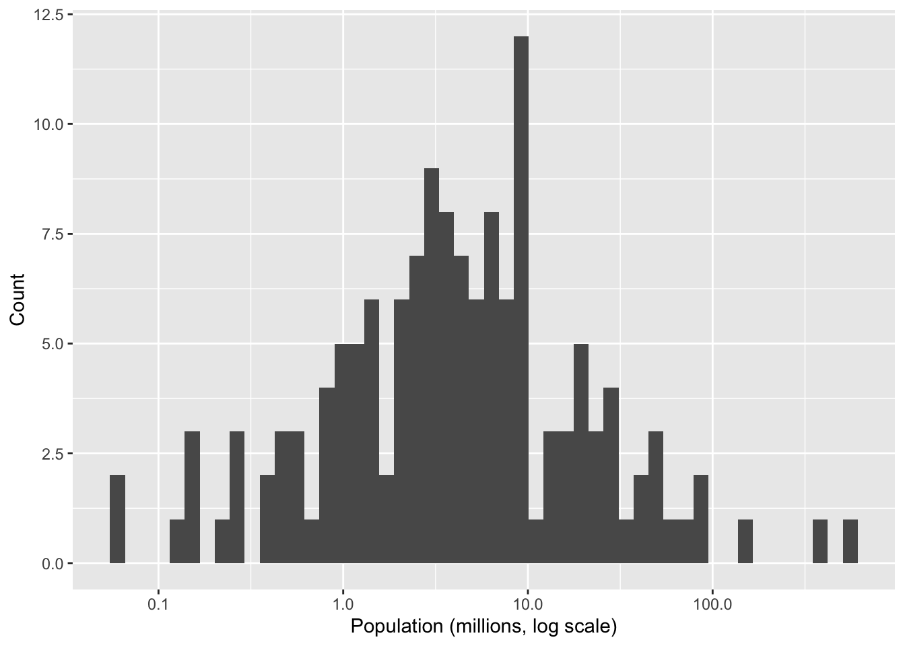
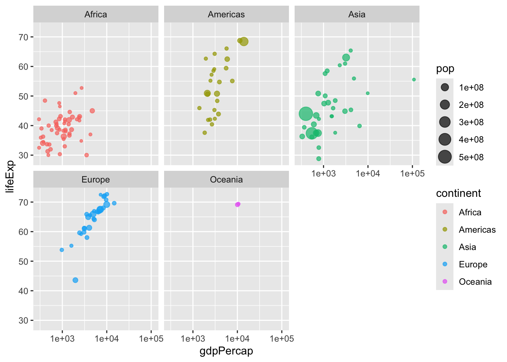

ggplot(
data = penguins, # the data frame
mapping = aes(x = flipper_length_mm, y = body_mass_g) # global aesthetic mapping
) +
geom_point(aes(color = species, shape = species)) + # local aesthetic
geom_smooth(method = "lm") +
labs(
title = "Body mass vs. flipper length",
subtitle = "Palmer Archipelago penguins",
x = "Flipper length (mm)",
y = "Body mass (g)",
caption = "Data: palmerpenguins package"
) +
ggthemes::scale_color_colorblind()6 Data Visualisation with ggplot2
ggplot2 uses a layered grammar of graphics: you build a plot by adding layers (geoms, scales, facets, themes) on top of a base ggplot() call. Extensions for specialised plot types are available at exts.ggplot2.tidyverse.org.
6.1 The basics
6.1.1 Anatomy of a ggplot call
6.1.2 Global vs. local aesthetics
Aesthetics specified inside ggplot(aes(...)) apply to all geoms. Aesthetics inside a specific geom_*() apply only to that layer.
# Global: both geom_point and geom_smooth share color = species
penguins |>
ggplot(aes(x = flipper_length_mm, y = body_mass_g, colour = species)) +
geom_point() +
geom_smooth(method = "lm")
6.2 Common geoms
6.2.1 Scatter plot — geom_point()
gapminder |>
filter(year == 2007) |>
ggplot(aes(x = gdpPercap, y = lifeExp, color = continent, size = pop)) +
geom_point(alpha = 0.7) +
scale_x_log10() +
labs(x = "GDP per capita (log scale)", y = "Life expectancy")
6.2.2 Line plot — geom_line()
gapminder |>
group_by(year, continent) |>
summarise(median_gdp = median(gdpPercap), .groups = "drop") |>
ggplot(aes(x = year, y = median_gdp, color = continent)) +
geom_line() +
expand_limits(y = 0)
6.2.3 Histogram — geom_histogram()
Takes a single x aesthetic. Use binwidth to control bin width or bins to set the number of bins.
gapminder |>
filter(year == 1952) |>
ggplot(aes(x = pop / 1e6)) +
geom_histogram(bins = 50) +
scale_x_log10() +
labs(x = "Population (millions, log scale)", y = "Count")
6.2.4 Bar plot — geom_col() vs geom_bar()
geom_bar()counts rows automatically (useful when data has one row per observation).geom_col()uses ayvariable you supply (useful after summarising).
# geom_col() with summarised data
gapminder |>
filter(year == 1952) |>
group_by(continent) |>
summarise(median_gdp = median(gdpPercap)) |>
ggplot(aes(x = continent, y = median_gdp)) +
geom_col()
# geom_bar() — reorder by frequency
penguins |>
ggplot(aes(x = fct_infreq(species))) +
geom_bar()6.2.5 Box plot — geom_boxplot()
penguins |>
ggplot(aes(x = species, y = bill_depth_mm)) +
geom_boxplot()6.2.6 Smooth lines — geom_smooth()
ggplot(data, aes(x = dose, y = response)) +
geom_jitter(width = 0.05, height = 0.05) +
geom_smooth(method = "glm", method.args = list(family = "poisson"))6.3 Aesthetics reference
| Aesthetic | Controls |
|---|---|
color / colour |
Outline or line colour |
fill |
Interior fill colour |
size |
Point size or line width |
shape |
Point shape (0–25) |
alpha |
Transparency (0 = invisible, 1 = opaque) |
linetype |
Line type (solid, dashed, dotted …) |
6.4 Scales
# Log-scale axes
scale_x_log10()
scale_y_log10()
# Manual colour scale
scale_color_manual(values = c("group1" = "#E41A1C", "group2" = "#377EB8"))
# Colorblind-safe palette (ggthemes)
ggthemes::scale_color_colorblind()
# Axis limits without removing data (use with care)
expand_limits(y = 0)
# Discrete x-axis labels
scale_x_discrete(labels = c("val1" = "Label 1", "val2" = "Label 2"))6.5 Faceting
facet_wrap() creates a grid of panels — one per level of a variable.
gapminder |>
filter(year == 1952) |>
ggplot(aes(x = gdpPercap, y = lifeExp, color = continent, size = pop)) +
geom_point(alpha = 0.7) +
scale_x_log10() +
facet_wrap(~continent)
6.6 Labelling
labs(
title = "Main title",
subtitle = "Subtitle",
x = "X-axis label",
y = "Y-axis label",
color = "Legend title",
caption = "Data source: ..."
)6.7 Overlaying multiple filtered geoms
When you want different subsets of the data on different layers, pass filtered data directly to each geom:
ggplot(data) +
geom_line(
data = data |> filter(group == "A"),
aes(x = time, y = value), color = "steelblue"
) +
geom_line(
data = data |> filter(group == "B"),
aes(x = time, y = value), color = "tomato"
)6.8 Special characters in labels
Use Unicode escape sequences when you need special characters in axis labels or titles:
"m\u00B2" # m²
"\u03B2" # β (beta)
"\u2264" # ≤
"\u2265" # ≥6.9 Venn diagrams
6.9.1 ggVennDiagram
library(ggVennDiagram)
set.seed(42)
gene_sets <- list(
Study_A = sample(paste0("gene", 1:1000), 300),
Study_B = sample(paste0("gene", 1:1000), 525),
Study_C = sample(paste0("gene", 1:1000), 440)
)
ggVennDiagram(gene_sets) +
scale_fill_gradient(low = "grey90", high = "tomato")6.9.2 VennDiagram (base-graphics approach)
library(VennDiagram)
# 3-set Venn from pre-counted values
draw.triple.venn(
area1 = 500, area2 = 480, area3 = 420,
n12 = 200, n13 = 180, n23 = 160, n123 = 80,
category = c("PTSD", "Anxiety disorder", "Depression"),
fill = c("#E41A1C", "#377EB8", "#4DAF4A"),
alpha = 0.5
)6.10 Radar / spider charts
The fmsb package draws radar charts from a data frame where the first row is the maximum value per axis and the second row is the minimum.
library(fmsb)
# Build the data frame
scores <- as.data.frame(matrix(
sample(2:20, 10, replace = TRUE), ncol = 10
))
colnames(scores) <- c("math", "biology", "music", "R", "stats",
"french", "physics", "english", "coding", "sport")
# Add max and min rows
scores <- rbind(rep(20, 10), rep(0, 10), scores)
# Default radar chart
radarchart(scores)
# Customised version
radarchart(
scores,
axistype = 1,
pcol = rgb(0.2, 0.5, 0.5, 0.9), # polygon colour
pfcol = rgb(0.2, 0.5, 0.5, 0.5), # fill colour
plwd = 3,
cglcol = "grey", cglty = 1,
axislabcol = "grey", caxislabels = seq(0, 20, 5),
vlcex = 0.8
)6.11 Clinical bar plots with custom labels
A pattern that comes up often in clinical papers: side-by-side or stacked bars with percentage labels.
# Example: LVEF distribution in a cardiac cohort
data_lvef <- data.frame(
group = c("LVEF < 30%", "LVEF 30–50%", "LVEF > 50%"),
percentage = c(35, 42, 23)
)
ggplot(data_lvef, aes(x = group, y = percentage, fill = group)) +
geom_col(width = 0.5, color = "black") +
coord_cartesian(ylim = c(0, 100)) +
labs(x = "", y = "Percentage (%)") +
theme_bw() +
theme(legend.position = "none")